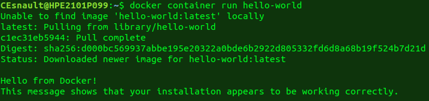
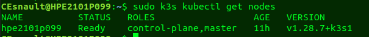
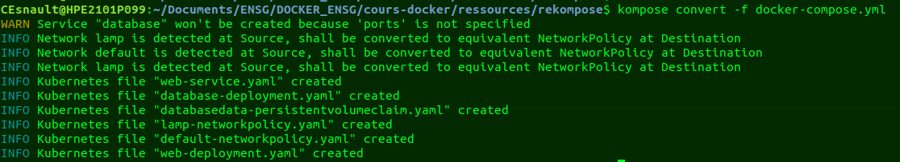
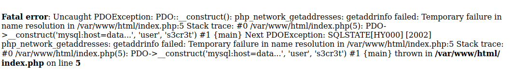

Docker par la pratique
IGN
Cédric Esnault
10/06/2025 - IGN/ENSG
Docker
Plan de la présentation
- Concepts
- Virtualisation
- Cloud
- Docker
- Historique / installation
- Utilisation
- TPs
- Dockerfile
- TPs
- Docker-compose
- Utilisation
- Tps
- Kubernetes
- Utilisation
- Demo
Cédric Esnault
Architecte Technique à la M A R S à l’IGN
Utilisateur de Docker depuis 2014
Ce cours est librement inspiré de plusieurs sources dont celles de Thibault Coupin.
Concepts
Virtualisation du système
Il existe plusieurs niveaux de virtualisation en informatique, avec un but commun : partager des ressources physiques pour simplifier et accélérer la transformation. Voici plusieurs niveaux de virtualisation de ressources :
- Émulation (ex: qemu-system-arm)
- Virtualisation complète (ex: Virtualbox)
- Para-virtualisation (ex: VMWare)
- Isolation applicative - conteneur (ex: ….Docker)
Isolation applicative
- Initialement spécifique au monde Unix
- Isolation de l’espace utilisateur
- « Partage » du noyau
- outils de packaging et de manipulation
Les conteneurs sont aussi disponibles sous Windows!
Isolation applicative

C’est quoi un conteneur ?
- Un espace isolé pour exécuter un processus (cpu et mémoire)
- Un paquet contenant l’application et ses dépendances
- Un segment réseau dédié
Cloud
La notion de Cloud tel qu’on l’entend aujourd’hui a été popularisée par Amazon quand ces derniers ont eu l’idée de mettre à disposition leurs serveurs inutilisés pendant les périodes creuses de leur activité. Il était nécessaire de fournir des solutions de virtualisations rapides et sûres.
Petit à petit, l’utilisation de conteneurs pour simplifier les tâches automatisées et améliorer le TimeToMarket s’est imposée. Aujourd’hui, les plateformes de Paas, Saas et de Faas sont basées sur des conteneurs (pas forcément Docker car il existe des alternatives).
Docker
Historique
Inventé par Solomon Hyke, Docker est une technologie qui vise à populariser l’usage des conteneurs afin de faciliter la mise en place de méthodologies Devops.
- 1979 chroot
- 2007 La technologie cgroup est intégrée au noyau Linux
- 2008 Sortie de LXC ; il s’appuie sur les espaces de nom de cgroups et Linux, comme Docker le fera par la suite
- 2013 Sortie de Docker comme logiciel open source par dotCloud Inc. qui deviendra Docker Inc.
- 2014 Docker est disponible sur Amazon EC2
- 2015 Google sort de Kubernetes
- 2018 Kubernetes est certifié Docker et devient la solution incontournable du marché
Pourquoi Docker
- Simplifier les déploiements : API
- Changer le mode de livrables : Images
- Faciliter la gestion des dépendances : l’isolation
C’est quoi Docker
Docker c’est avant tout deux notions :
Des Conteneurs constitués :
- 1 process (
ou plusieurs) - Isolation par rapport à l’OS hôte (cgroups/namespaces)
- Utilisant le noyau de l’hôte
Des Image contenant :
- Les librairies nécessaires
- Le code de l’application
Et un peu aussi des réseaux et des volumes
Pourquoi Docker plutôt qu’une VM ?
- Léger
- le conteneur ne contient que le processus de l’application
- scalabilité “facilitée”
- Reproductible
- on peut recréer un conteneur vierge rapidement
- on peut scripter la création de l’image
- Portabilité
- la même exécution quel que soit l’environnement
- les images peuvent être transférées d’une machine à une autre
Les apports de Docker face aux autres solutions
- hub.docker.com : diffusion d’image officielle et communautaire
- Simplification de la création de conteneur, notamment pour la communauté dev
- Concept de configuration par variables d’environnement
- Cross platform
Cas d’usage
- Développement : Environnement portable
- Intégration continue : Environnement propre et portable
- Optimisation : Mutualisation de ressources matérielles
- Gestion de l’obsolescence : Plusieurs versions de l’environnement d’exécution sur le même serveur
Docker : l’outil
Les installations classiques de Docker sont composées de 2 éléments principaux (sans descendre plus bas niveau).
- Un Daemon avec une API qui va s’occuper des interactions avec les conteneurs, les images, les réseaux…
- Un client CLI pour parler à cette API
l’OCI est un organisme qui a pour but de normaliser les éléments constitutifs de la virtualisation et des conteneurs. C’est important car il existe également des alternatives/concurrents à Docker.
Versions
- CE : community edition qui est la version gratuite que nous allons utiliser ;
- EE : entreprise edition qui est plus évoluée avec des fonctionnalités supplémentaires et une certification de fonctionnement sur certains matériels.
Depuis mars 2017, la nomenclature des versions suit la forme des versions de Ubuntu à savoir AA.MM avec AA l’année et MM le mois (ex. : 17.04 pour la version d’avril 2017).
- une version stable est compilée tous les trimestres (ex : 17.03, 17.06, 17.09, 17.12…) ;
- une version edge est compilée tous les mois et contient les nouvelles fonctionnalités.
Architecture
Un conteneur ne devrait isoler qu’un seul et unique processus à la fois, une fois ce processus terminé le conteneur s’arrête. Cette règle peut parfois être transgressée lorsqu’une amélioration notable peut être apportée par l’exécution de plusieurs processus dans un même conteneur (par ex: apache et php).
Installation
Mickaël Borne (IGN) a préparé une excellente documentation, basée sur la documentation officielle (https://docs.docker.com/engine/install/ubuntu/#install-using-the-convenience-script) pour installer Docker dans l’environnement IGN.
https://support.gitlab-pages.ign.fr/devsecops/outils/docker/installation-docker-ce/
Pour une installation à l’ENSG, nous simplifierons quelques aspects.
Nous allons installer Docker dans la machine virtuelle Ubuntu à partir de la documentation officielle
Installation : particularités IGN 1
Pour permettre les accès à internet dans un environnement où un proxy doit être utilisé, il faut configurer celui-ci à plusieurs endroits. Tout d’abord, au niveau du Daemon Docker qui est lancé par System-D :
sudo mkdir -p /etc/systemd/system/docker.service.d/
sudo vi /etc/systemd/system/docker.service.d/proxy.confDont le contenu sera (à adapter) :
Installation : particularités IGN 2
Lors des modifications de configuration, il faut s’assurer que le daemon Docker tourne correctement:
Puis, au besoin, il faut le relancer :
Installation : particularités IGN 2
Le fichier /etc/docker/daemon.json va permettre de définir les spécificités réseaux de l’installation Docker.
{
"bip": "192.168.199.1/24",
"fixed-cidr": "192.168.199.1/25",
"default-address-pools" : [
{"base" : "192.168.200.0/23","size" : 28}
]
//...
}Au niveau du réseau, cette configuration permet de ne pas avoir de collision avec les réseaux IGN/ENSG, particulièrement lors de l’utilisation du VPN.
Installation : particularités IGN 3
Si on souhaite interagir avec les environnements internes à l’IGN, il faut également préciser :
- Les serveurs DNS
- les registres Docker non sécurisés
Installation : Droits
Pour éviter d’avoir à faire sudo docker, on peut ajouter un utilisateur au groupe docker :
- Ajouter l’utilisateur au groupe docker :
- Tester
Nous venons de lancer notre premier conteneur
note : Le projet PWD permet également de tester Docker sans l’installer au travers d’une interface web. Les sessions de travail durent 4h et la vitesse de l’interface dépend souvent de l’activité des autres utilisateurs…
Testons notre installation
docker container run hello-world
# Alias : docker run hello-worldLa commande par défaut de cette image affiche un message confirmant la bonne installation de Docker Engine. Si l’image n’est pas disponible en local, elle sera téléchargée sans avoir à faire un docker image pull hello-world

Docker : utilisation
Les images Docker
L’image est le “disque dur” figé sur lequel va se baser le conteneur.
Elle contient l’application, ses dépendances et des métadonnées.
C’est le moule pour créer les conteneurs.
Où trouve-t-on les images ?
- Sur des registry sur internet, principalement hub.docker.com
- sur votre machine si vous avez déjà téléchargé l’image
- from scratch ou basée sur des images de base (ubuntu, centOs, alpine)
- à partir d’un Dockerfile
- en commitant un conteneur (à décourager)
Nomenclature des images
REGISTRY: URL du dépôt (par défaut hub.docker.io)IMAGE: nom de l’image (peut contenir un chemin)TAG: tag de l’image (par défaut latest)
par exemple :
node:14.20-alpineregistry.gpf-tech.ign.fr/geoplateforme/gpf-rok4:latest
Architecture des images

Commandes relatives aux images
Dans un premier temps, nous allons juste les utiliser afin de construire des Conteneurs Docker
Nous verrons plus tard comment travailler avec les images :
docker image lsdocker image pulldocker image inspectdocker image rmdocker image build- …
Les conteneurs
- Un conteneur est une instance d’image.
- Le conteneur permet d’isoler un processus (et ses enfants)
- Le conteneur ne peut pas vivre si le processus se termine.
- Chaque conteneur a son propre stockage même s’ils sont basés sur la même image.
Démarrer un conteneur
OPTIONS: diverses options sont possiblesREGISTRY/IMAGE:TAG: l’image à utiliserCOMMANDE: la commande à lancer dans le conteneur. Une commande par défaut peut être définie dans les métadonnées de l’image.
Cette commande crée le conteneur (l’environnement d’exécution) et lance le processus dans le conteneur.
Démarrer un conteneur
Exemple :
- On utilise l’image
alpine - On exécute la commande
cat /etc/hostname - Le conteneur affiche le contenu du fichier
/etc/hostnameet s’arrête. - L’option
--rmpermet de détruire le conteneur une fois la commande terminée (sinon, le conteneur reste présent dans l’état Exited )
Démarrer un conteneur
Exemple :
Démarre un shell dans le conteneur (Exit pour quitter).
Comme si on était dans une VM.
Vous pouvez explorer le système de fichiers pour voir ce qui s’y trouve.
Cette commande n'est pas toujours possible (voir --entrypoint)
Lister les conteneurs
Mais pourquoi on ne voit pas les conteneurs d’avant ?
Lister tous les conteneurs
docker container ls -a
CONTAINER ID IMAGE COMMAND CREATED STATUS PORTS NAMES
a5b74e24da65 alpine "cat /etc/hostname" 9 seconds ago Exited (0) 6 seconds ago happy_coriOn voit le premier conteneur resté dans l’état Exited
L’activité des conteneurs
- CPU
- Mémoire
- Réseau
- Disque (i/o)
Supprimer les conteneurs
- Le conteneur doit être arrêté
Gérer les conteneurs
stopetstart(killaussi)restartpauseetunpause
Options utiles
| Options | Description |
|---|---|
--name |
donner un nom au conteneur |
-i |
interactif |
-t |
forcer l’allocation d’un TTY |
--rm |
supprimer le conteneur à la fin de son exécution |
-d |
démarrer le conteneur en arrière-plan |
--entrypoint |
redéfinit le premier processus de l’image |
Il en existe beaucoup d’autres : gestion des ressources, du réseau, de l’environnement d’exécution, etc.
Mise en réseau
Le conteneur dispose généralement de son propre réseau virtuel.
Docker permet de définir :
- Les liens réseaux entre conteneurs
- Les liens entre le réseau physique de l’hôte et les réseaux virtuels
Création de réseaux
À la création du conteneur
La commande docker container run dispose de l’option --net
4 valeurs possibles :
none: pas de réseauhost: les réseaux de l’hôtebridge(par défaut) : un réseau isolé avec un mécanisme de bridge- Le nom d’un réseau créé avec la commande
docker network create
Réseau de l’hôte
docker container run --rm --net host alpine ip a
1: lo: <LOOPBACK,UP,LOWER_UP> mtu 65536 qdisc noqueue state UNKNOWN qlen 1
link/loopback 00:00:00:00:00:00 brd 00:00:00:00:00:00
inet 127.0.0.1/8 scope host lo
valid_lft forever preferred_lft forever
33481: eth0@if33482: <BROADCAST,MULTICAST,UP,LOWER_UP,M-DOWN> mtu 1500 qdisc noqueue state UP
link/ether e6:bd:09:a3:dc:84 brd ff:ff:ff:ff:ff:ff
inet 192.168.0.8/23 scope global eth0
valid_lft forever preferred_lft foreverCe mode est peu utilisé, il peut parfois entrer en collision avec des réglages réseaux d’entreprise (VPN,…). Il pose aussi des problèmes de sécurité (suppression de l’isolation réseau).
Réseau bridge par défaut
- Les conteneurs sont sur un réseau séparé
- Ils peuvent communiquer avec l’extérieur et entre eux (via l’IP)
- L’extérieur ne peut pas communiquer avec le conteneur, sauf si explicitement demandé (option
-p).
Réseau créé
- Prévu pour interconnecter des conteneurs
- Même fonction que
bridge+ résolution DNS des autres conteneurs
Exposer un port sur l’hôte
Le port 8080 de la machine hôte est redirigé vers le port 80 du conteneur Apache (httpd basé sur un OS alpine).
Les volumes
Un conteneur est “jetable”
- Lorsqu’on détruit un conteneur, on supprime aussi les modifications apportées au système de fichiers (dernière couche).
- Les conteneurs ont des systèmes de fichiers isolés.
Les volumes apportent une solution à cela
2 types de volumes
- un dossier de la machine hôte
- un volume géré par docker
Volume hôte
On utilise l’option -v LOCAL_PATH:PATH_ON_CONTAINER:MODE
LOCAL_PATH: le chemin absolu sur l’hôtePATH_ON_CONTAINER: où brancher ce dossier dans le conteneur ?MODE(optionnel) : mode d’accès, principalement rw (par défaut) et ro
Volume docker
- Gestion des volumes avec un workflow dédié :
docker volume createdocker volume lsdocker volume rm
- Abstraction du backend de stockage :
- local
- partage réseau
- baie de stockage
Créer un volume
Créer un volume lors de la création d’un conteneur
On peut préciser le driver à utiliser. Le driver dépend du backend, par défaut local.
Volume anonyme
Les métadonnées d’une image peuvent forcer la création d’un volume
Volume docker
Lister les volumes
$ docker volume ls
DRIVER VOLUME NAME
local 2bd7394a7adebb03f073bd82048048124578e0b506adea3064fda5d38ef7b678
local data-telegraf
local e0c1ad4b13ed61067082a3511feaae14dbdcacd19632594c129548e241575e0c
local minidlna
local mongodbDans certains cas, Docker crée des volumes “anonymes”, leur nom est une longue chaîne alphanumérique
Supprimer un volume
Supprimer un volume lors de la suppression d’un conteneur
⚠️ Ne concerne que les volumes anonymes
Gestion des données à la création d’un volume
- un volume hôte remplace totalement un chemin du conteneur.
- un volume docker utilisé pour la première fois est initialisé avec le contenu du chemin de montage dans le conteneur.
Volumes avancés
L’option --mount permet des montages plus élaborés :
- autant de possibilités qu’avec le fichier
/etc/fstab - suppose que le support existe, pas de création à la volée comme avec un
docker volume create(ex. : pas de création de l’export NFS sur le serveur)
Volumes avancés
Un volume hôte est un --mount particulier.
À vous de jouer maintenant
Lors de l’installation, nous avons créé un conteneur pour vérifier que Docker était bien installé
- Observez que le conteneur est bien existant et à l’arrêt
- Si vous avez déjà testé les manipulations d’exemple, vous pouvez recréer un nouveau conteneur hello-world.
Correction
docker ls est un alias de docker container ls
La première commande n’affiche rien, car le conteneur lancé est déjà arrêté. En effet, l’image hello-world lance une commande qui affiche un message et c’est tout. Il faut ajouter l’option -a pour afficher également les conteneurs arrêtés.
Gérer les conteneurs : supprimer
- Essayez de supprimer le(s) conteneur(s) déjà créé(s)
Correction
On peut trouver le nom du conteneur à supprimer dans le résultat de la commande docker container ls -a. Si aucun nom n’est spécifié lors de la création du conteneur (option --name), docker génère un nom aléatoire composé d’un adjectif et d’un nom de personnalité.
On pourrait aussi utiliser l’identifiant du conteneur à la place du nom.
Gérer les images
- Affichez la liste des images
- Créez un nouveau conteneur hello-world, notez le temps de chargement de l’image
- Supprimez ensuite la(s) images(s) existante(s)
Correction
docker image ls
docker image rm hello-world:latest
docker run hello-world
docker ls -a
docker rm <CONTAINER-NAME>
docker image rm hello-worldLa commande docker container rm ne supprime que le conteneur. Pour supprimer l’image, il faut utiliser la commande docker image rm <IMAGE-NAME> (ou l’alias docker rmi <IMAGE-NAME>). Une image ne peut pas être supprimée si il existe un conteneur basé dessus, même stoppé. Il faut donc supprimer le conteneur avant de pouvoir supprimer l’image.
Gérer les repository
https://hub.docker.com/_/alpine/
- Téléchargez la dernière version de l’image alpine sur dockerhub
Correction
Dockerhub est le dépôt d’image par défaut de Docker. Ici, on ne précise pas le tag. C’est donc le tag latest qui est téléchargé. On affiche ensuite les métadonnées de l’image téléchargée, on y trouvera des informations utiles sur l’image :
- date de création
- type de processeur compatible
- commande par défaut
- …
Docker tag
La commande docker tag permet de gérer les tag de vos images locales, cela est utile pour “renommer” une image afin de l’envoyer sur un repository distant. Cette commande permet de “nommer” l’image bce5g99azq58 afin de l’uploader dans le registry du géoportail (il faut les droits associés)
Gérer les entrées/sorties
Correction
Une fois dans le conteneur, on peut afficher le nom d’hôte du conteneur avec la commande cat /etc/hostname. On peut également modifier la commande (unique) lancée dans un conteneur.
On peut voir le conteneur en état Exited. Dans le premier terminal, on peut voir que le shell est arrêté.
Correction
Pour aller plus loin, cherchez des informations sur les options -d, -w, -h, --rm et --name de la commande docker container run et testez ces options.
Gérer les volumes “host”
- Démarrez un conteneur alpine avec un TTY en montant la racine de la machine hôte sur
/hosten mode volume hote et en lecture seule dans le conteneur - Observez le contenu de
/host - Depuis un terminal sur votre machine host, ajoutez un nouveau fichier dans votre
~/et observez ce dossier dans votre conteneur Alpine
Correction
Le fichier /etc/hostname contient bien le nom d’hôte du conteneur. Le fichier /host/etc/hostname contient le nom d’hôte de la machine hôte. Le dossier /host/home/ubuntu/ contient votre home (si votre user est bien ubuntu…)
Gérer les volumes docker
- Démarrez un conteneur alpine avec un TTY et un volume docker sur
/data - Créez un fichier dans
/data/puis supprimez le conteneur - Démarrez un nouveau conteneur alpine avec un TTY et un volume docker avec le même nom sur
/data - Observez le contenu de
/data/ - Listez puis supprimez les volumes
Correction
docker run --rm -i -t -v NAME:/data:rw alpine sh
docker run -i -t -v NAME:/data:rw alpine sh
docker volume ls
docker volume rm NAMEOn ne peut supprimer un volume que si aucun conteneur ne l’utilise. Le message d’erreur indique l’identifiant du conteneur utilisant ce volume :
Gérer le Réseau
- Affichez la liste des interfaces de votre machine hôte puis d’un conteneur avec la commande
ip a - Lancez un nouveau conteneur avec l’option
--net hostpuis regardez les interfaces
Correction
L’option --net host branche le conteneur sur les interfaces réseaux de la machine hôte. Il n’y a donc pas d’isolation réseau., c’est une option à éviter dans la plupart des cas.
Exposition de ports
https://hub.docker.com/r/containous/whoami/
- Démarrez un conteneur basé sur l’image “whoami”, inspectez-le et trouvez l’IP pour tester une requête HTTP sur cette IP.
Correction
L’IP du conteneur n’est accessible que depuis la machine hébergeant le conteneur. On ne peut pas y accéder depuis l’extérieur de la machine hôte avec son adresse IP car c’est un réseau privé, interne à notre hôte.
Exposition de ports
- Recréez un conteneur en ajoutant cette fois l’exposition du port 80 du conteneur sur le port 8080 de la machine et refaire les tests
Correction
docker container run -p 8080:80 containous/whoami
curl -s http://127.0.0.1:8080
curl -s http://<IP_HOST>:8080On peut toujours accéder au port 80 de l’IP du conteneur. On peut maintenant également accéder au port 8080 de la machine grâce à l’option -p y compris depuis l’extérieur de la machine (ici le LAN ENSG).
Création de réseaux
- Créez un nouveau réseau test-nginx
- Utilisez
docker inspectpour voir ce qui a été créé - Créez un premier conteneur basé sur l’image
nginxnommé (--name) nginx , attaché au réseau test-ningx et qui tourne en daemon. - Créer un conteneur basé sur l’image
alpine/curlsans préciser de réseau, avec un terminal interactif (/bin/sh)- Essayez d’atteindre le serveur nginx précédemment créé
- Créez un nouveau conteneur basé sur
alpine/curlattaché au réseau test-nginx avec un terminal interactif- Réessayez de joindre le serveur nginx
curl -v "http://[IP|hostname][:PORT]/"Correction
docker network create test-nginx
docker inspect test-nginx
docker run --network test-nginx --name nginx -d nginx
docker run --rm -ti alpine/curl /bin/sh
# / # curl nginx
# curl: (6) Could not resolve host: nginx
docker run --rm -ti --network test-nginx alpine/curl /bin/sh
# / # curl nginx
# <!DOCTYPE html>
# ...Docker : le grand nettoyage
Les commandes suivantes vont tenter de nettoyer tout ce qui n’est pas utilisé. À utiliser avec tact, mais peut être salvateur !
Docker context
Il est possible de décorréler la CLI du Daemon Docker de votre machine et ainsi de “piloter” un autre host avec votre CLI. Les Contextes Docker sont faits pour cela.
Docker exec
La commande docker exec permet de lancer un nouveau processus dans un conteneur actif existant, cette commande est pratique pour lancer un Shell d’observation ou de debug par exemple.
Docker cp
La commande docker cp permet d’échanger des fichiers/dossiers entre le user-space d’un conteneur et celui de votre host.
docker run --name alpineContainer -d alpine tail -f /dev/null
docker cp /etc/hostname alpineContainer:/local.hostname
docker exec alpineContainer cat /local.hostname
docker stop alpineContainer
docker cp alpineContainer:/etc/hostname ./alpine.hostname
# Successfully copied 2.05kB to /home/CEsnault/alpine.hostname
cat alpine.hostname
# 4583aca170a9
docker rm alpineContainerCette commande fonctionne également lors de l’utilisation d’un contexte distant.
Autres commandes docker
Il existe d’autres commandes docker dont la documentation est disponible sur https://docs.docker.com/engine/reference/commandline/docker/
⚠️ Attention, certaines de ces commandes sont propres au mode d’exécution en cluster swarm
TP LAMP
Objectif LAMP
Le but de ce TP est de mettre en place les éléments nécessaires d’un serveur web de type LAMP.
- Linux
- Apache
- MySql
- PHP
Les fichiers nécessaires sont disponibles dans le dépôt GIT de ce cours, dans le dossier ressources https://github.com/cedric-esnault-ign/cours_docker.git . Utilisez git pour récuperer ce dépôt et travaillez dans le dossier ressouces .
git clone https://github.com/cedric-esnault-ign/cours_docker.git
cd cours_docker/ressourcesApache
L’image à utiliser ici est httpd. Les options --name -d -p -v --net peuvent être utiles. La racine du serveur web dans l’image est /usr/local/apache2/htdocs/
- Dans le dossier
ressources, créez un dossierapache-racinepour le montage host - Lancez un conteneur avec un montage de ce dossier
apache-racine(chemin absolu) sur la racine du serveur et exposant le port 80 du conteneur sur le port 8080 de la machine host. - Qu’affiche la page http://127.0.0.1:8080 ?
- Utilisez le contenu du fichier
index-lamp.htmlprésent dans le dossier cartopoint pour remplacer la page d’accueil (index.html)
Correction
docker network create lamp
docker run --net lamp --name web -d -p 8080:80 -v "$(pwd)/apache-racine/:/usr/local/apache2/htdocs/" httpd:latest
cp cartopoint/index-lamp.html apache-racine/index.html- –name définit le nom du conteneur
- -d le laisse en arrière plan
- -p 8080:80 expose le port 80
- -v … partage un dossier local avec la racine du serveur web
- –net web attache le conteneur au réseau web
Un peu de PHP
- Remplacez le fichier
index.htmlparindex.phpavec le contenu du fichierindex-lamp.php. Qu’observez-vous?
Un peu de PHP
httpd est de base un simple serveur web sans fonctionnalité PHP. Il faudrait ajouter PHP dans cette image et configurer httpd pour interpréter les fichiers PHP. Sans cela, httpd cherche uniquement les fichiers index.html si aucun fichier n’est précisé dans l’URL.
Même en essayant http://127.0.0.1:8080/index.php, le résultat n’est pas satisfaisant, il n’y a qu’une page verte alors qu’elle devrait afficher l’heure.
- Recréez votre conteneur en utilisant l’image php:8-apache qui contient l’interpréteur PHP. ⚠️Attention⚠️, au niveau du montage dans cette image, la racine du serveur Web est maintenant
/var/www/htmlet plus/usr/local/apache2/htdocs/!
Note : on déroge ici un peu à la règle 1 processus par conteneur. On pourrait séparer Apache et PHP, mais la liaison serait plus complexe.
- Rafraichissez plusieurs fois la page et profitez-en pour regarder les logs
docker logs <NAME>
Correction
docker rm -f web
docker run --net lamp --name web -d -p 8080:80 -v "$(pwd)/apache-racine/:/var/www/html/" php:8-apache
cp cartopoint/index-lamp.php apache-racine/index.phpOn n’a pas besoin d’utiliser la commande docker cp car le dossier apache-racine est partagé entre l’host et le conteneur
Ajout d’une Base De Données
Notre site web évolue ! Il va maintenant afficher une carte. Un clic permet de créer un point, sauvegardé en base de données. Un clic sur un point le supprime.
- Utilisez l’image
cedricici/php:8-apache-mysqlpuis remplacez le fichierindex.phppar le contenu du fichierindex-bdd.php, observez les erreurs - Il faut ensuite lancer un second conteneur pour notre base de données. Utilisez l’image
mariadb:10.5. Vous trouverez des informations sur la configuration de cette image sur hub.docker.com. (Précisez bien la version 10.5 , il y a des soucis de compatibilité avec les plus récentes) - Configurez la base de données de façon à ce que le code PHP fonctionne (nom d’utilisateur, mot de passe et base de données). L’option
-ededocker runpermet de passer des variables d’environnement au conteneur. Les deux conteneurs doivent se situer sur le même réseau pour pouvoir se “parler” (DNS).
Correction
Les variables à utiliser :
| Nom | Valeur | Explication |
|---|---|---|
MARIADB_RANDOM_ROOT_PASSWORD |
yes |
Laisse le choix du mot de passe du super administrateur de la base mariadb. On pourrait utiliser MARIADB_ROOT_PASSWORD pour choisir ce mot de passe, mais dans le contexte de ce TP, ça n’a pas d’importance. |
MARIADB_DATABASE |
mymap |
C’est le nom de la base de données à créer. Ce nom est défini dans le code PHP. |
MARIADB_USER |
user |
C’est le nom de l’utilisateur à créer. Il est défini dans le code PHP. |
MARIADB_PASSWORD |
s3cr3t |
C’est le mot de passe de l’utilisateur à créer. Il est défini dans le code PHP. |
Avec la commande docker exec ..., lancez le client mariadb en ligne de commande pour explorer la base de données et observez le contenu de la table point au fur et à mesure des interactions avec la carte. (select * from point; sur la table mymap )
Correction
docker rm -f web
docker network create lamp
docker run --net lamp -d --name web -p 8080:80 -v $(pwd)/apache-racine/:/var/www/html/ cedricici/php:8-apache-mysql
docker run --net lamp -d --name database -e MARIADB_RANDOM_ROOT_PASSWORD=yes -e MARIADB_DATABASE=mymap -e MARIADB_USER=user -e MARIADB_PASSWORD=s3cr3t mariadb:10.5
# Pour lancer un client mariadb d'observation de la base
docker exec -it database mariadb -u user -D mymap --password="s3cr3t"Persistence de la Base De Données
Détruisez les conteneurs, puis reconstruisez l’ensemble. Les points sont perdus :-(
- Résolvez ce problème, vous trouverez les informations nécessaires sur la page dockerhub.
Correction
TP NextCloud
Déployer un nextCloud
Le but est de mettre en place NextCloud, un gestionnaire de fichiers en ligne. L’image à utiliser est nextcloud, disponible sur https://hub.docker.com/_/nextcloud/. Cette page contient beaucoup de détails que vous pouvez trouver dans les métadonnées de l’image.
Première étape
un serveur simple avec une base de données SQLite (un fichier)
- Stoppez les éventuels conteneurs en cours (web) (ne détruisez pas les réseaux)
- Lancez un conteneur exposant sur le port 8080 de la machine hôte le serveur nextcloud et rendez-vous sur http://127.0.0.1:8080 pour accéder à l’interface d’initialisation du serveur.
- Suivez les étapes d’installation. (base SQLite)
- Utilisez l’application pour générer du contenu (uploadez des fichiers)
- Utilisez la commande
docker execpour lister vos fichiers uploadés (/var/www/html/data/)
Deuxième étape
- Ajoutez un volume pour persister les données lorsque le conteneur est détruit (testez)
- Préparez run réseau nextcloud pour notre application
- Lancez un conteneur MariaDB ou PostgreSQL avec persistence de données, un nom et utilisant le réseau nextcloud et reconstruisez l’ application en utilisant cette base de données
Correction
docker network create nextcloud
docker run -d --name nextcloud -v nextcloud-data:/var/www/html/data/ --net nextcloud -p 8080:80 nextcloud
docker run -d --name nextcloud-database -v databasedata:/var/lib/mysql --net nextcloud -e MARIADB_RANDOM_ROOT_PASSWORD=yes -e MARIADB_DATABASE=nextcloud -e MARIADB_USER=nextcloud -e MARIADB_PASSWORD=s3cr3t mariadbDockerfile
Construire ses propres images
- Objectif
- Automatiser la création des images grâce à un jeu d’instructions
- Un environnement d’exécution propre lors des mises à jour
- Pouvoir reconstruire : mouvance IaC, paradigme cloud
- À partir d’un Dockerfile
- On part d’une image existante
- Chaque ligne équivaut à lancer un conteneur et à le commiter
- L’image est créée avec le nom spécifié
Construction d’une image
On construit une image avec un Dockerfile
DOCKERFILE_PATH est le chemin du dossier contenant le Dockerfile. Il est conseillé de dédier un nouveau dossier pour construire les images, toutes les références seront relatives à ce dossier (et on ne pourra pas en sortir)
build est ici un alias de buildx que vous pouvez rencontrer, le moteur de construction par défaut étant buildkit
La documentation de référence du Dockerfile est présente ici :
Instructions Dockerfile
Le Dockerfile est constitué d’une suite d’instructions, chaque ligne résultant en une nouvelle couche dans l’image.
Un Dockerfile commence généralement par l’identification de l’image de base (la seule exception est le passage d’un argument ARG permettant de définir dynamiquement l’image de FROM).
Instructions Dockerfile
Modifier les métadonnées
Le consortium OpenContainers a défini une liste de clés :
- org.opencontainers.image.authors
- org.opencontainers.image.version
- …
Instructions Dockerfile
Lancer une commande
- Installer des dépendances
- Déplacer des fichiers
- Compiler une librairie
- …
Instructions Dockerfile
Ajouter des fichiers locaux ou distants
L’emplacement <src>est relatif au dossier de build.
Globalement identiques mais :
ADDsupporte les URLADDdécompresse les archives- gestion du cache de build différente
COPYest plus “prévisible”COPYest compatible avec le Multi-stage
Instructions Dockerfile
Modifier l’environnement d’exécution
ENV #Variable d environnement
USER #Changement d utilisateur
WORKDIR #Changement du dossier de travailIl est fortement conseillé de ne pas utiliser le user root pour des raisons de sécurité.
Instructions Dockerfile
Modifier l’exécution
CMD #Commande par défaut
EXPOSE #Déclarer un port réseau
VOLUME #Déclarer un volume
HEALTHCHECK #Définit une sonde de vieD’autres instructions sont disponibles sur https://docs.docker.com/engine/reference/builder/
Avancé : paramétriser le Dockerfile
Il est possible de passer des paramètres lors du build de l’image.
Dans le reste du fichier, on fait référence à cette variable avec ${name:-default_value}
Pour définir la valeur lors de la construction :
Certaines variables sont automatiquement ajoutées (les réglages de proxy par exemple)
Multistage build
Le conteneur de production ne doit contenir que ce qui est nécessaire pour le run, il ne doit rien rester dans l’image en rapport avec le dev/build. Pour optimiser le poids de l’image de RUN, on sépare la création de l’image en plusieurs phases. Un conteneur de build génère un package à copier sur le conteneur de run
Multistage build
FROM debian:bookworm as builder
RUN apt-get update && apt-get install -y build-essential BUILD_DEPENDENCIES
ADD https://github.com/...../master.zip /master
RUN make # Cette commande génère le fichier /master/monBinaire
FROM debian:bookworm
RUN apt-get update && apt-get install RUN_DEPENDENCIES
COPY --from=builder /master/monBinaire /opt/bin/
CMD /opt/bin/monBinaireSeul le dernier FROM sera contenu dans l’image finale
Bonnes pratiques de conceptions
- Créer des conteneurs légers : juste ce qu’il faut
- Ne laisser qu’un seul processus par conteneur : microservices
- Créer des conteneurs éphémères : utilisation de volumes
- En mode cloud natif, on évitera l’utilisation de volumes persistants en favorisant les applications stateless.
- Passer toutes les configurations sous forme de variables d’environnement, à défaut via un volume (RO)
- Minimiser et optimiser la taille des images
- …
Bonnes pratiques de sécurité
- Choisir les bonnes images de base
- Utiliser des images en rootless
- Favoriser les images compatibles avec ReadOnlyFileSystem
- Exposer des ports > 1024
- Scanner régulièrement les images avec un outil de scan, ex : Trivy
- …
Bonnes pratiques Docker
Mickaël Borne a regroupé un ensemble de bonnes pratiques qui sont disponibles ici :
TP Dockerfile
Reprise de notre application de cartopoint
Nous allons ici simplement créer une nouvelle image pour avoir un moyen de livrer notre application.
- Cette image sera basée sur l’image déjà référencée :
php:8-apacheavec le mot clé FROM (mais pascedricici/php:8-apache-mysqlqui est déjà un build d’image) - Installez les drivers mysql pour cette image avec le mot clé RUN , l’image
php:8-apachecontient une commade pour cela :docker-php-ext-install mysqli pdo_mysql - Copiez le fichier
index-bdd.phpenindex.phpdans le dossier par défaut du serveur web. - Et c’est tout :D
- Construisez une image nommée cartopoint:1.0 à partir de ce Dockerfile avec la commande
docker build - Nous avons maintenant une image autonome pour ce qui est de la partie statique de notre site Web (les données restent bien entendu dans la base de données)
- Testez cette image !
Correction
FROM php:8-apache
RUN docker-php-ext-install mysqli pdo_mysql
COPY index-bdd.php /var/www/html/index.phpdocker build -t cartopoint:1.0 .
docker rm -f web
docker run -d --name web --net lamp -p 8080:80 cartopoint:1.0Cela devrait fonctionner si vous n’avez pas détruit la stack LAMP ! Sinon, il faudra recréer réseau et base de données.
Une application node.js
Cette fois-ci, nous allons créer pas à pas une image Docker pour une application node.js dont le code de l’application est disponible dans le dossier ressources\findmefast\
- Commençons par créer un fichier nommé
Dockerfile - Avec l’image Alpine : node:18-alpine
- Il faut ensuite réaliser ces actions :
- exposer le port
1111 - Créer un dossier
/appà la racine du conteneur - Définir l’espace de travail dans ce nouveau dossier
- Copier le fichier
package.jsondans ce dossier - Exécuter la commande
npm install --productionafin d’installer les dépendances - Copier les sources (le dossier
/publicet le fichierserver.js) dans ce dossier - définir la commande par défaut :
npm start
- exposer le port
- Construisez une image avec le nom de votre choix
Une application node.js
Et on pourra tester l’application avec la commande docker run en mappant un port de votre machine sur le port 1111 du conteneur.
=> Pour pouvoir tester l’application entre vous, il faudra faire une petite manipulation pour mapper ce port dans la VM Virtualbox
Correction
Une compilation C
Nous allons maintenant créer une petite image multistage pour compiler puis exécuter un petit programme qui calcule n n nombres premiers (le seul intérêt de ce programme est de solliciter le CPU). Nous profiterons de ce programme pour bien comprendre la notion de Kernel et de Userspace dans les conteneurs. Dans un premier temps , nous allons compiler le programme sur notre host.
- Placez-vous dans le dossier
ressources/prime - Installez
gcc:sudo apt-get update && sudo apt-get install gcc - Compilez le programme :
gcc prime.c -o prime - Mesurez le temps nécessaire pour calculer les 10000 premiers nombres premiers (utilisez
time, le programme./primeprend en argument la quantité de nombres premiers à trouver).
Correction
Compilation dans un conteneur
Créez une nouvelle image que vous nommerez prime:debian
- Partir d’une image
debiandernière version disponible - Installer les paquets nécessaires pour la compilation
- Ajouter le fichier source
- Compiler le programme
- Définir une commande par défaut (Par exemple
./prime 1) - Mesurer le temps nécessaire pour calculer les 10000 premiers nombres premiers avec cette image.
Que pensez-vous des résultats obtenus? Est-ce normal d’après vous?
Correction
FROM debian
RUN apt-get update && apt-get install -y gcc
COPY prime.c prime.c
RUN gcc prime.c -o prime
CMD [ "./prime","1" ]$ docker build -t prime:debian .
$ time docker run prime:debian ./prime 10000
Calcul des 10000 premiers nombres premiers
real 0m2,624s
user 0m0,022s
sys 0m0,018sLe temps dans l’espace utilisateur de notre hôte est nul car toute l’opération se déroule dans l’espace utilisateur du conteneur.
Amélioration multistage
Nous allons améliorer l’image en créant une image multistage
- Nommez le premier
FROMpour définir un premier stage - Une fois le fichier compilé, créez un nouveau stage
- Récupérez le fichier compilé lors du premier stage
- Laissez la commande par défaut
- Générez une nouvelle image appelée prime:multi
⚠️ n’écrasez pas l’image prime:debian ⚠️
- Comparez le poids des deux images
- Comparez les vitesses d’exécution
Correction
Correction
On peut même aller plus loin et utiliser une image plus petite et se basant sur l’image scratch qui ne contient rien. Il faut donc inclure les librairies dans le binaire final (option -static). Cela pose tout de même quelques limitations : l’image ne contenant même pas de shell, il n’est pas possible de passer des paramètres.
TP LibreQR
Création du Dockerfile
Vous êtes en avance, voici une proposition de Dockerfile à créer en toute autonomie : dockeriser une application LibreQR, une application web de génération de QR Code. Voici les ressources nécéssaires :
- Le code source et la documentation se trouvent là : https://code.antopie.org/miraty/libreqr
- basé sur l’image
php:7.4-apache - Installez les paquets
libpng-devetunzip - Installez le driver GD pour PHP
docker-php-ext-install gd - Pensez à rendre le dossier et les fichiers accessibles à l’utilisateur du service httpd
www-data. - Utilisez la configuration PHP de production et non de développement (voir la partie “Configuration” de https://hub.docker.com/_/php )
- Modifiez le fichier de configuration à inclure pour changer le texte affiché en bas de page.
Correction
FROM php:8-apache
RUN apt-get update && \
apt-get install -y unzip libpng-dev
RUN docker-php-ext-install gd
WORKDIR /var/www/html
COPY . .
RUN chown -R www-data:www-data /var/www/html/
ENV LIBREQR_THEME=libreqr \
LIBREQR_DEFAULT_LOCALE=fr \
LIBREQR_CUSTOM_TEXT_ENABLED=true \
LIBREQR_CUSTOM_TEXT="LibreQR on docker" \
LIBREQR_DEFAULT_REDUNDANCY=high \
LIBREQR_DEFAULT_MARGIN=20 \
LIBREQR_DEFAULT_SIZE=300 \
LIBREQR_DEFAULT_BGCOLOR=FFFFFF \
LIBREQR_DEFAULT_FGCOLOR=000000Proposez vos projets
Nous pouvons voir ensemble les étapes nécessaires à la Dockerisation de vos applications.
Docker compose
Bilan docker
- Une commande par conteneur
- Toutes les options à écrire
- Gestion fine des conteneurs, réseaux et volumes
Limites Docker+Dockerfile
Imaginez la complexité pour déployer un CMS comprenant :
- un CMS (Wordpress)
- une base de données
- un FTP pour déposer des fichiers à publier
- un système de cache pour soulager la BDD
- un proxy inverse pour gérer le reste du cache
Définition
Docker compose permet de définir tous les éléments nécessaires pour faire tourner une application multi-conteneurs.
- Un fichier définit les composants :
- image
- réseau
- volume
- relation/dépendance
- Compose pilote directement le daemon docker
Le fichier de définition
L’application est définie dans un fichier au format YAML avec 3 sections principales, plus quelques autres informations.
- les services
- les volumes
- les réseaux
Compose a été complètement réécrit en 2020 et intégré à la CLI Docker
- On écrit donc
docker composeet non plusdocker-compose - La version du format (première ligne du ficher YAML) n’est plus obligatoire
Les versions
Le modèle du docker-compose.yml a plusieurs versions possibles.
| Compose file format | Docker Engine |
|---|---|
| specification | 19.03.0+ |
| 3.8 | 19.03.0+ |
| 3.7 | 18.06.0+ |
| … | … |
| 2.0 | 1.10.0+ |
| 1.0 | 1.9.1.+ |
https://docs.docker.com/compose/compose-file/compose-versioning/
La dernière version specification est devenue un “standard” de manière à ne plus être propre à l’utilisation avec le daemon docker.
Les services
Permet de définir les éléments composant l’application :
- image ou Dockerfile
- utilisation de volumes
- utilisation de réseaux
- port d’écoute
- …
Tous les détails sur la doc.
Services : images ou build
Quelle est la base du conteneur ?
- une image
- un DockerFile
Utiliser une image est plus sûr. Un pipeline de CI est chargé de construire les images avec une gestion des Tags permettant d’avoir des releases connues. La création de l’image “à la volée” dans le docker-compose est une option viable en mode de développement.
Services : volumes
Montage des volumes Docker ou host
volumes:
# sans précision, Docker crée un volume nommé (sans nom...)
- /var/lib/mysql
# Un volume Docker nommé
- datavolume:/var/lib/mysql
# Un volume "host" en chemin absolu
- /opt/data:/var/lib/mysql
# Un volume "host" en chemin relatif au fichier docker-compose
- ./cache:/tmp/cache
# Un volume "host" en chemin relatif au home de l'utilisateur
- ~/configs:/etc/configs/:ro
Services : réseau
Branchement des réseaux et exposition de ports sur la machine hôte
services:
some-service:
networks:
- some-network
- other-network
ports:
- "80:80" # Bien mettre les guillemetsSeuls les services qui seront exposés doivent être connectés au réseau “externe”, les autres services doivent être connectés au même réseau interne pour pouvoir communiquer entre eux. Il est nécessaire de ne déclarer que les ports ouverts sur le host. Les conteneurs d’un même réseau ont un accès total aux autres conteneurs de ce réseau.
Services : dépendances inter-conteneurs
Docker-compose démarre les conteneurs dans le bon ordre à condition qu’il le connaisse…
- on peut déclarer des dépendances avec depends_on
Services : command
Pour surcharger la commande par défaut, on utilise le paramètre command
Services : autres options
Quelques autres options sont intéressantes :
Les volumes
- Permet de définir des volumes (driver, options)
- Tout volume utilisé par un service doit être déclaré, même s’il est externe (external)
- Les montages host->container ne sont pas concernés
Tous les détails sur la doc.
Les volumes temporaires
Il est également possible de définir des volumes temporaires qui seront stockés en RAM et seront détruits avec le conteneur
Les réseaux
- Permet de définir des réseaux (driver, options)
- Par défaut, un réseau est créé par projet
- Gestion de l’IPAM
- Tout réseau utilisé par un service doit être déclaré, même s’il est externe (external)
Tous les détails sur la doc.
Réseaux : driver par défaut (bridge)
Extention
Les Dockerfile profittent aussi des évolution du format Yaml, il est maintenant possible d’étendre les items disponibles. On peut ainsi partager les variables d’environnements entre plusieurs services.
CLI
Depuis la version 2 de docker compose, la commande docker-compose est intégrée à la commande docker et devient donc une sous-commande de la commande docker.
On lance l’application avec la commande
L’option -d permet de lancer les conteneurs en arrière-plan. L’option -f permet de spécifier un fichier compose différent (par défaut docker-compose.yaml)
Commandes
Gestion des conteneurs
Commandes
Nettoyage des conteneurs stoppés
Nettoyage des éléments
Documentation
docker compose help
ou
TP docker-compose
On prend les mêmes…
Pour ce TP, nous allons tenter de reproduire le TP LAMP en utilisant un docker-compose.yaml
- Écrivez le docker-compose qui va réaliser les mêmes actions. N’oubliez pas :
- Les volumes
- Les réseaux
- Les variables d’environnement
- Les dépendances
- Lancez la stack en mode démon
- Observez les logs
- Notez le nom des conteneurs créés
Note : il existe des solutions plus “sûres” pour passer des variables d’environnement sensibles (mot de passe)
Correction
services:
web:
image: cartopoint:1.0
ports:
- "8080:80"
networks:
- lamp
depends_on:
- database
database:
image: mariadb:10.5
environment:
- MARIADB_RANDOM_ROOT_PASSWORD=yes
- MARIADB_DATABASE=mymap
- MARIADB_USER=user
- MARIADB_PASSWORD=s3cr3t
volumes:
- databasedata:/var/lib/mysql
networks:
- lamp
volumes:
databasedata:
networks:
lamp:Kubernetes
Orchestration de conteneurs
Quand on parle de Docker en 2024, on peut difficillement ne pas évoquer Kubernetes (K8S).
K8S est une solution d’orchestration de conteneurs mise au point par Google et devenue la référence en la matière. On peut résumer K8S à un super compose, même si il permet beaucoup plus de choses. K8S a permis d’amener les conteneurs Docker (créés avant tout pour les développeurs) en production, en apportant le contrôle et la sécurité nécéssaire.
Docker propose lui aussi son orchestrateur, SWARM, dont la CLI est intégrée au client docker. Celui-ci n’étant pas au niveau de Kubernetes, nous n’en parlerons pas, même si il a eu l’avantage d’être plus simple que K8S il y a quelques années.
Principe de Kubernetes
Une solution d’orchestration de conteneurs va permettre de déployer et de maintenir en fonctionnement des conteneurs. Du point de vue de l’utilisateur développeur, k8s c’est surtout :
- une API pour contrôler les objets k8s (listing, création, suppression, etc.)
- un client CLI (kubectl) pour interagir avec cette API
L’API de k8s est extensible, c’est-à-dire qu’il est possible de créer de nouveaux types d’objets Kubernetes et ainsi d’ajouter de nouvelles fonctionalités à vos clusters.
Concepts de k8s
- Les manifest permettent de représenter un objet k8s sous la forme d’un fichier yaml ou json
- Les namespaces permettent une certaine isolation au sein d’un même cluster Kubernetes (~projets).
- Les noeuds sont les “machines” qui supportent les conteneurs (pods)
- Les pods sont les plus simples objets k8s, ils peuvent contenir un ou plusieurs conteneurs
- Les services représentent l’élement réseau de base dans k8s, ils permetent d’exposer un service sur un port par exemple. Ils réalisent la répartition sur les pods qui leur sont rattachés. Il existe plusieurs types de services k8s. Les ingress sont d’autres objets réseau pour exposer les services du cluster.
Concepts de k8s
- Les volumes permettent la persistence des données. C’est un élément à manier avec précaution car la persistence des données en volume est un élément complexe à gérer dans les architectures cloud-natives, on lui préférera du stockage Objet.
- Les workload management permettent d’organiser les pods , il en existe de plusieurs types, deployment, statefullset, daemonset, Jobs, Cronjobs etc…
- Les configMaps permettent de stocker des configurations pour les pods. Il existe aussi la notion de secret pour stocker des données plus sensibles (bien qu’ils ne soient pas chiffrés par défaut)
Il y a bien d’autres types d’objets Kubernetes !
Installation
Pour pouvoir tester k8s, il va nous falloir installer une mini-distribution Kubernetes : k3s. Cette distribution permet de tester rapidement Kubernetes sur un seul nœud en masquant sa complexité sous-jacente.
Après quelques instants, nous pouvons tester si le cluster (de 1 nœud…) est disponible :

Interface
Il est possible d’installer une interface WEB pour interragir plus facilement avec kubernetes. voici la méthode d’installation :
sudo -s # la conternement de root avec kubernetes est assez complexe
export KUBECONFIG=/etc/rancher/k3s/k3s.yaml
snap install helm --classic
helm repo add kubernetes-dashboard https://kubernetes.github.io/dashboard/
helm upgrade --install kubernetes-dashboard kubernetes-dashboard/kubernetes-dashboard --create-namespace --namespace kubernetes-dashboardInterface : Accès
Pour pouvoir accéder à ce dashboard, il faut gérer les utilisateurs et les droits. Ces commandes créént un utilisateur administrateur pour le dashboard avec les bon droits
kubectl create serviceaccount dashboard-admin-sa -n kubernetes-dashboard && kubectl create clusterrolebinding dashboard-admin-sa --clusterrole=cluster-admin --serviceaccount=kubernetes-dashboard:dashboard-admin-saIl faut ensuite générer un token :
Puis exposer le dashboard sur notre machine à l’adresse suivante : https://127.0.0.1:8443
Application
Nous allons essayer de déployer notre application cartopoint dans notre k3s, pour cela il faut définir les Manifests des différents objets nécessaires.
- un déploiement pour la partie web
- un déploiement pour la partie base de données
- un service pour la partie web
- un service pour la partie base de données
- une persistence pour la base de données
Pour faire cela, nous allons utiliser l’outil Kompose qui permet de traduire un dockerfile en Manifest.
Conversion
Il faut ensuite lancer la conversion :

Une alerte est levée car nous n’avons pas précisé l’exposition de la base de données, nous y reviendrons.
Manifest
Kompose a généré des fichiers Manifest :
- web-deployment.yaml : décrit le déploiement de la stack web
- database-deploiement.yaml : décrit le déploiement de la stack database
- database-persistentcolumeclaim.yaml : décrit la persistence des données de la database
- web-service.yaml : décrit le service d’exposition web
Mise au point
Observons en détails le fichier database-persistentcolumeclaim.yaml
apiVersion: v1
kind: PersistentVolumeClaim
metadata:
creationTimestamp: null
labels:
io.kompose.service: databasedata
name: databasedata
spec:
accessModes:
- ReadWriteOnce
resources:
requests:
storage: 100Mi
status: {}Puis déployons-le :
Deploiement
Nous pouvons ensuite appliquer le reste des Manifests
sudo k3s kubectl apply -f database-deployment.yaml
sudo k3s kubectl apply -f web-deployment.yaml
sudo k3s kubectl apply -f web-service.yaml
sudo k3s kubectl apply -f web-deployment.yamlSi nous réappliquons les Manifests , k3s change de message :
Cela indique que le système est idempotent et qu’il prendra en compte toute nouvelle modification, mais uniquement celle-ci.
Vérification
On peut vérifier que les objets sont présents :
NAME STATUS VOLUME CAPACITY ACCESS MODES STORAGECLASS AGE
databasedata Bound pvc-d3705298-0b05-4c91-b9a1-7d9c5760685b 100Mi RWO local-path 11hPuis, pour accéder à l’application, nous pouvons utiliser le proxy fourni par k3s
Cette commande transfert le port 8080 du service web dans le k3s vers le port 9999 de votre machine.
Quelques soucis subsistent ?
Premier soucis
Il semblerait que le pod web ne soit pas correctement démarré
En effet, l’image cartopoint:1.0 n’est pas disponible ! Modifions donc le Manifest web-deployment.yaml pour utiliser une image publique :
Appliquons la différence, et vérifions
D’autres soucis
Si tout se passe bien, nous devrions accéder maintenant au site https://127.0.0.1:9999

Il semblerait que non…
Le souci ici vient du fait que notre application web ne trouve pas sa base de données. En effet, Kompose nous avait averti que celle-ci n’était pas exposée dans le dockerfile.
Exposition
Corrigeons ceci et créons un Manifest database-service.yaml pour exposer la base de données, exposée sur le port 3306.
apiVersion: v1
kind: Service
metadata:
name: database
labels:
io.kompose.service: database
spec:
ports:
- name: "3306"
port: 3306
targetPort: 3306
selector:
io.kompose.service: databaseAppliquons le Manifest